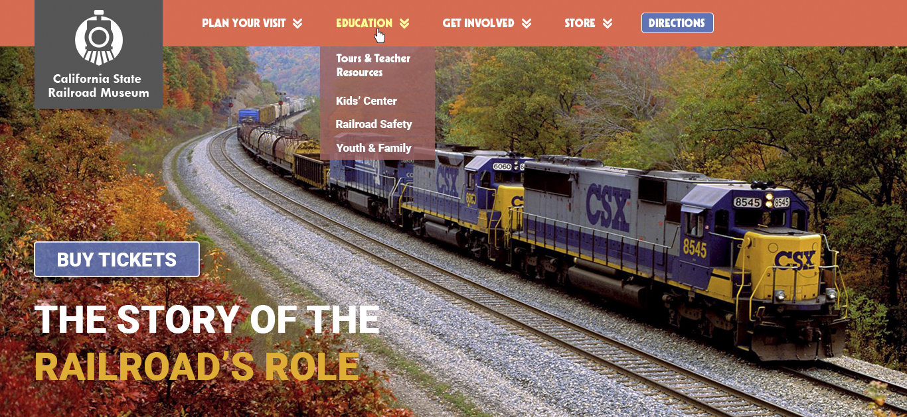
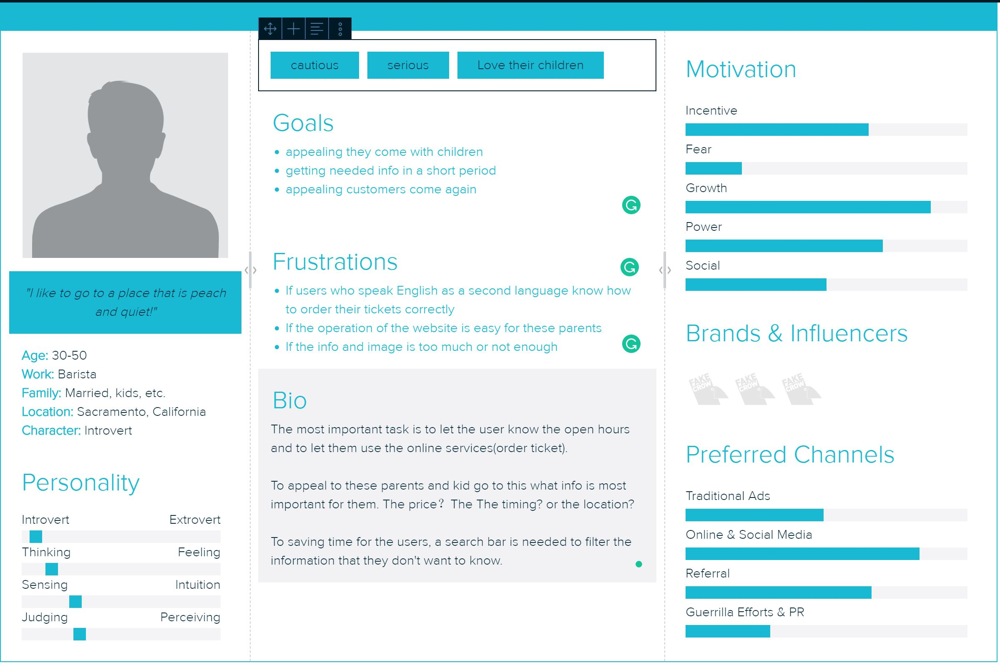
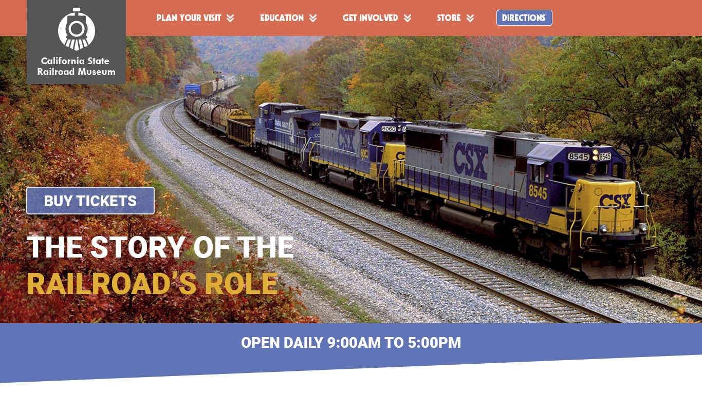
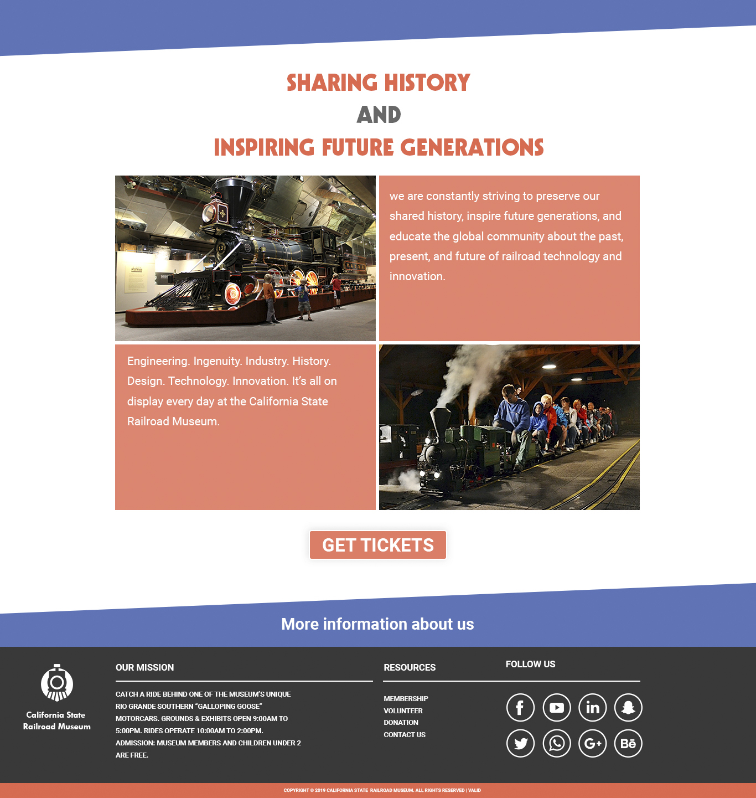
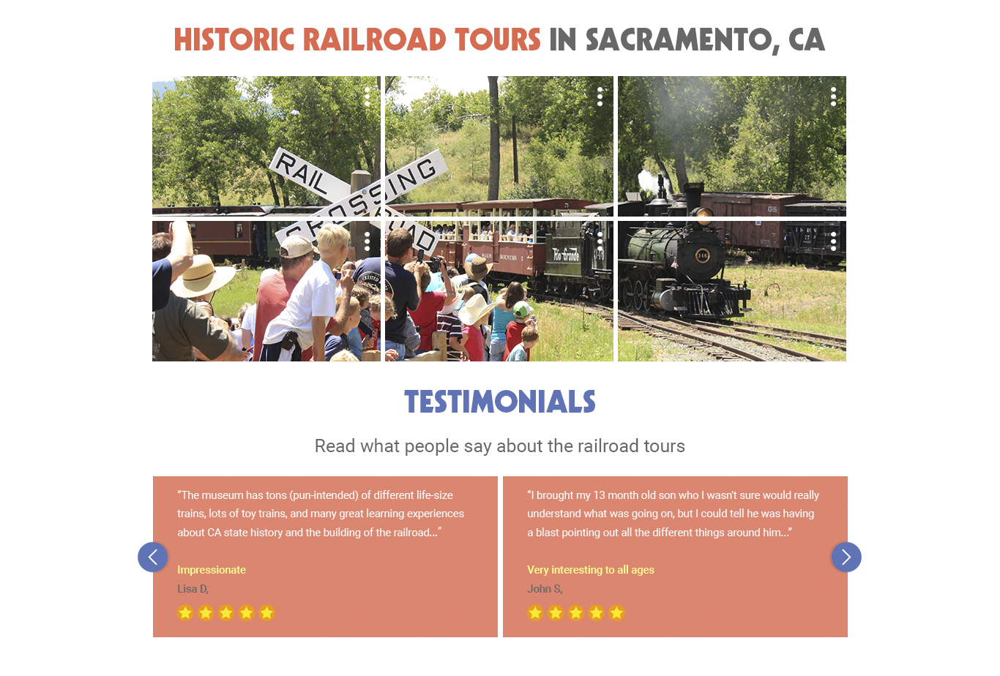
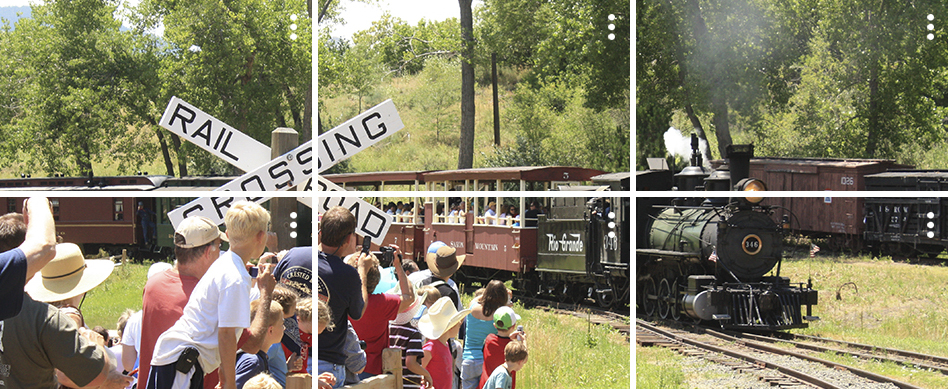

California State Railroad Museum
The Prompt
The goal and purpose of this project was to design an interactive digital product that communicated something unique and specific related to the theme of "inclusiveness, respect, and reciprocity".
Target Audience
I created a user persona for my project to get a better understanding of what type of content I could put on the website. My user persona is a child's parent who cares about his/her children, so he/she wants their children to learn the history of the California State Railroad Museum. As I thought more about my user persona, it helped me realize that my project could include a brief section that shows kids activities and show pictures to let these activities be more visualized. As the user scrolls to the bottom, there will be a section that introduces the history of the railroad museum.
Final Prototype
The most important task of the website is to appeal to the audience to go to the museum, so I place a “Buy Tickets” button on both at the top of the page and the bottom of the page because I would like the audience to find the option easily.
As the user scrolls down, there is a section which he/she can see the customer feedback. This section is beneficial to let the audience get additional and real experience from other customers.
Click for the full size image of the website
Lessons Learned
I learned how to use the design pattern to convey information. For instance, to let the audience know the picture is clickable, I add three little dots to express that the pictures are clickable. Additionally, I learned that website design not just makes it look good, but also tells the audience the story of the website. This means I can design a website like a story, I can tell the board information about the museum, and then I can share information and history of the museum by using section by section. Overall, this project made me explore a lot about web design, and it made it realize web design is not just graphic design, but also the user experience design.
